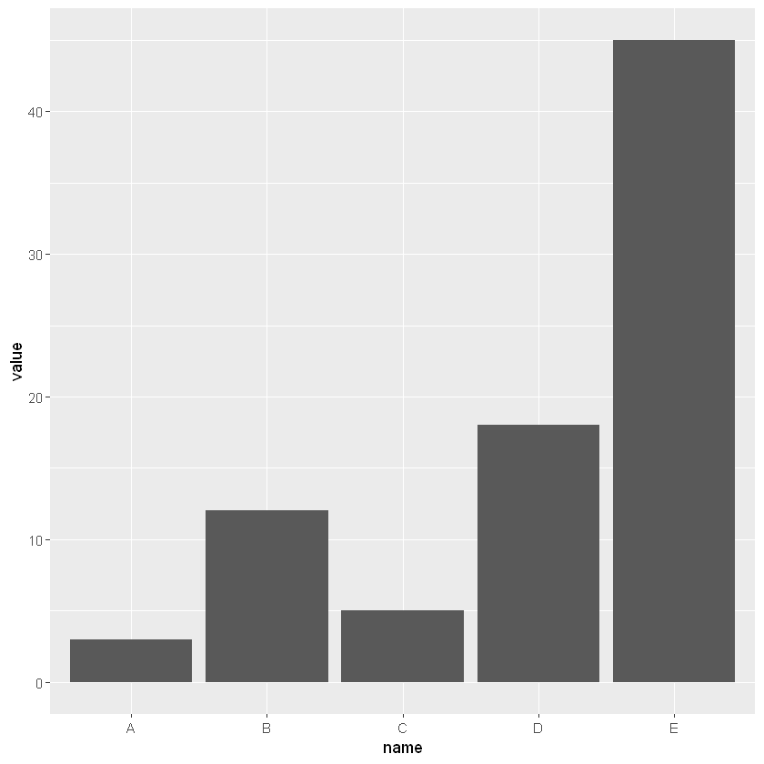
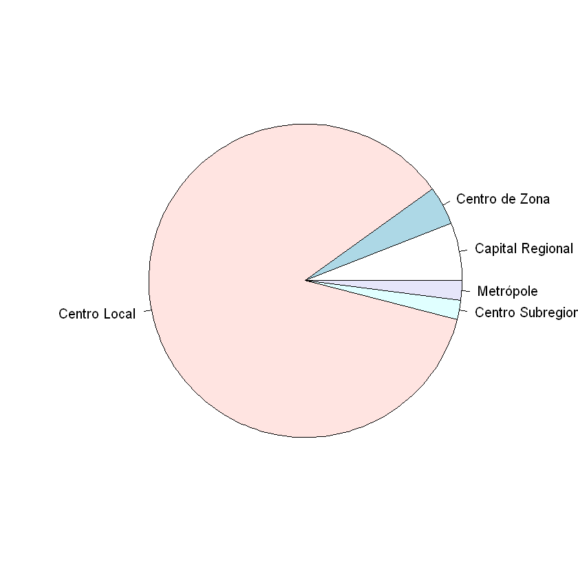
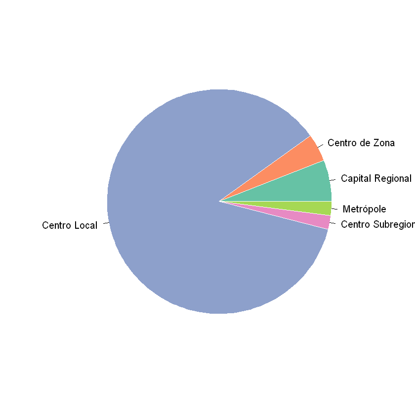
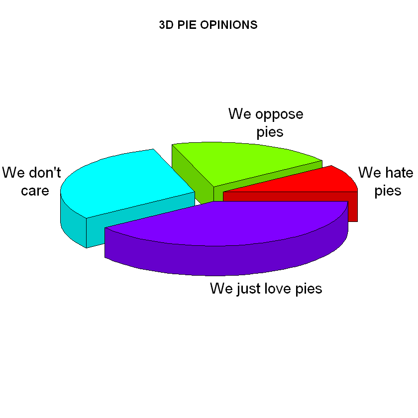
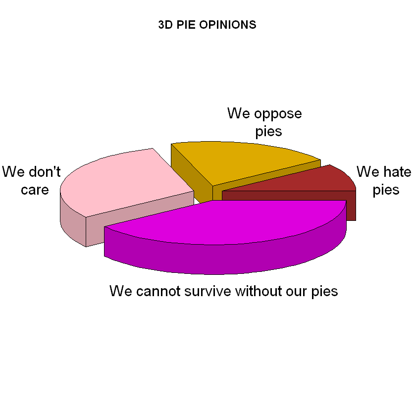
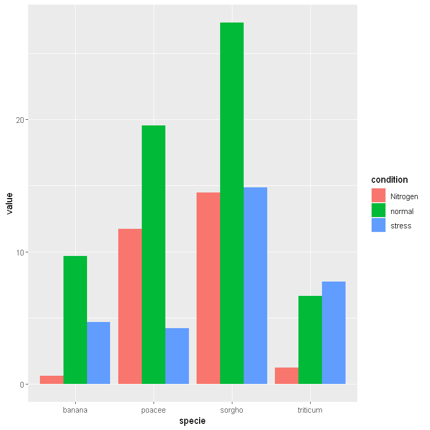

mydata = read.csv(file='/content/sample_data/california_housing_test.csv')Aula 3- Introdução
PPEC
Ensino
Estatística
primeira aula
Table of Contents
Primeiro Notebook em R
Para que você crie um Notebook Jupyter em R você precisará de um Kernel apropriado.
Para instalação do Kernel de R no Jupter Notebook você pode instalar o R-Irkernel via Anaconda Navigator (você irá procurar pelo nome em Enviroments/base(root)/Not installed/R-Irkernel ou prompt do Anaconda com o seguinte comando conda install -c r r-irkernel
Neste Tutorial iremos abordar Topicos da Parte II capitulo 4 de BARBETA,2011 Descrição e Exploração de dados/Dados categorizados, utilizando para os exemplos codigos em R.
Descrição e exploração de dados
Dados Categorizados
Antes de começar é preciso baixar o arquivo aqui e carregalo no menu lateral icone arquivos e buscar o icone de upload. O arquivo deve ser carregado na pasta contend ou copie o caminho clicando com o botão direito do mouse sobre o arquivo carregado e substituindo o caminho no comando abaixo.
colnames(mydata)- 'longitude'
- 'latitude'
- 'housing_median_age'
- 'total_rooms'
- 'total_bedrooms'
- 'population'
- 'households'
- 'median_income'
- 'median_house_value'
summary(mydata$'median_house_value') Min. 1st Qu. Median Mean 3rd Qu. Max.
22500 121200 177650 205846 263975 500001 Distribuição de frequências
sample1=mydata[sample(nrow(mydata), 50),c('households','median_house_value') ]sample2=mydata[sample(nrow(mydata), 50),c("households",'total_bedrooms')]Freq<-transform(table(sample1$'median_house_value'))
Freq1<-transform(table(sample2$'total_bedrooms'))
colnames(Freq)[colnames(Freq) == "Freq"] <- "Frequencia"
colnames(Freq)[colnames(Freq) == "Var1"] <- "median_house_value"
Freq| households | Frequencia |
|---|---|
| <fct> | <int> |
| 58300 | 1 |
| 61300 | 1 |
| 66600 | 1 |
| 71300 | 1 |
| 83400 | 1 |
| 87500 | 1 |
| 95000 | 1 |
| 97900 | 1 |
| 1e+05 | 1 |
| 101900 | 1 |
| 103300 | 1 |
| 109100 | 1 |
| 122900 | 1 |
| 130100 | 1 |
| 139700 | 1 |
| 146000 | 1 |
| 155000 | 1 |
| 157700 | 1 |
| 165600 | 1 |
| 170800 | 1 |
| 172800 | 1 |
| 174100 | 1 |
| 182700 | 1 |
| 182800 | 1 |
| 186600 | 1 |
| 189400 | 1 |
| 191800 | 1 |
| 195000 | 1 |
| 204800 | 1 |
| 206300 | 1 |
| 210900 | 1 |
| 211400 | 1 |
| 231800 | 1 |
| 234400 | 1 |
| 235300 | 1 |
| 252700 | 1 |
| 264700 | 1 |
| 288500 | 1 |
| 304800 | 1 |
| 318400 | 1 |
| 329400 | 1 |
| 332800 | 1 |
| 340700 | 1 |
| 353900 | 1 |
| 364000 | 1 |
| 411500 | 1 |
| 414800 | 1 |
| 500001 | 3 |
Freq1| total_bedrooms | Frequencia |
|---|---|
| <fct> | <int> |
| 8 | 1 |
| 117 | 1 |
| 146 | 1 |
| 150 | 1 |
| 168 | 1 |
| 169 | 1 |
| 209 | 1 |
| 225 | 1 |
| 242 | 1 |
| 250 | 1 |
| 257 | 1 |
| 261 | 1 |
| 284 | 1 |
| 297 | 1 |
| 305 | 1 |
| 322 | 1 |
| 329 | 1 |
| 348 | 1 |
| 351 | 1 |
| 364 | 1 |
| 372 | 1 |
| 375 | 1 |
| 382 | 1 |
| 389 | 1 |
| 393 | 1 |
| 422 | 1 |
| 434 | 1 |
| 471 | 1 |
| 493 | 2 |
| 496 | 1 |
| 507 | 1 |
| 516 | 1 |
| 545 | 1 |
| 547 | 1 |
| 548 | 1 |
| 552 | 1 |
| 560 | 1 |
| 626 | 1 |
| 629 | 1 |
| 672 | 1 |
| 823 | 1 |
| 953 | 1 |
| 1082 | 1 |
| 1137 | 1 |
| 1139 | 1 |
| 1201 | 1 |
| 1317 | 1 |
| 1860 | 1 |
| 2696 | 1 |
Tabela de frequências
xout<-transform(Freq, cumFreq = cumsum(Freq), relative = prop.table(Freq))
xoutERROR: ignored
Error in Math.data.frame(Freq): non-numeric variable(s) in data frame: households
Traceback:
1. transform(Freq, cumFreq = cumsum(Freq), relative = prop.table(Freq))
2. transform.data.frame(Freq, cumFreq = cumsum(Freq), relative = prop.table(Freq))
3. eval(substitute(list(...)), `_data`, parent.frame())
4. eval(substitute(list(...)), `_data`, parent.frame())
5. Math.data.frame(Freq)
6. stop("non-numeric variable(s) in data frame: ", paste(vnames[!mode.ok],
. collapse = ", "))Representações Gráficas
Gráfico de Barras
#separando dados que serão usados na variavel selec
selec<-xout[c("Var1","Freq")]
# esse parametro serve para aumentar as margens
par(mar=c(11,4,4,4))
#plotando o grafico de barras
barplot(height=selec$Freq, names=selec$Var1,font.axis=1, col="#69b3a2",cex.axis=1, las=2)ERROR: ignored
Error in eval(expr, envir, enclos): object 'xout' not found
Traceback:# Load ggplot2
library(ggplot2)
# Create data
data <- data.frame(
name=c("A","B","C","D","E") ,
value=c(3,12,5,18,45)
)
# Barplot
ggplot(data, aes(x=name, y=value)) +
geom_bar(stat = "identity")Warning message:
"package 'ggplot2' was built under R version 3.6.3"
Gráfico de Setores
pie(selec$Freq , labels = selec$Var1)
# Prepare a color palette. Here with R color brewer:
library(RColorBrewer)
myPalette <- brewer.pal(5, "Set2")
# You can change the border of each area with the classical parameters:
pie(selec$Freq , labels = selec$Var1, border="white", col=myPalette )
##### faltou chamar essa biblioteca#####
########################################
library(plotrix)
#######################################
pieval<-c(2,4,6,8)
pielabels<-
c("We hate\n pies","We oppose\n pies","We don't\n care","We just love pies")
# grab the radial positions of the labels
lp<-pie3D(pieval,radius=0.9,labels=pielabels,explode=0.1,main="3D PIE OPINIONS")
# lengthen the last label and move it to the left
pielabels[4]<-"We cannot survive without our pies"
lp[4]<-4.8
# specify some new colors
pie3D(pieval,radius=0.9,labels=pielabels,explode=0.1,main="3D PIE OPINIONS",
col=c("brown","#ddaa00","pink","#dd00dd"),labelpos=lp)Warning message:
"package 'plotrix' was built under R version 3.6.3"

Gráfico de Barras multiplas
# create a dataset
specie <- c(rep("sorgho" , 3) , rep("poacee" , 3) , rep("banana" , 3) , rep("triticum" , 3) )
condition <- rep(c("normal" , "stress" , "Nitrogen") , 4)
value <- abs(rnorm(12 , 0 , 15))
data <- data.frame(specie,condition,value)
# Grouped
ggplot(data, aes(fill=condition, y=value, x=specie)) +
geom_bar(position="dodge", stat="identity")